CH6)대류 열전달
이제까지는 전도에 의한 열전달에 집중하였다. 이제는 대류를 통한 열전달 계산을 수행하는 법과, 특히 대류 열전달의 기초가 되는 물리적 메커니즘에 대한 명확한 이해를 하려고 한다. 물리적인 기본원리와 함께 매우 중요한 상사성 및 그에 관련된 무차원 매개변수들이 도출될 것이다.
독특한 점은 대류에 의한 물질전달 효과를 대류 열전달의 상사성으로 도입하는 방법이다. 대류에 의한 물질전달에서 총체적 유체 운동은 확산과 결합하여 농도구배가 존재하는 화학종의 전달을 증진시키게 된다. 이 책에서는 표면위에 흐르는 기체흐름에 의하여 휘발성 고체면이나 액체면에서 일어나는 대류 물질전달에 초점을 맞추고자 한다.
6.1)대류경계층
속도,온도,농도 경계층이 기술되고 마찰계수, 대류열전달계수, 대류물질전달계수가 소개된다.
6.1.1)속도 경계층
다음 흐름을 생각해보자.
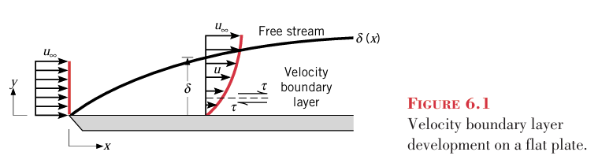
유체입자들이 표면에 접촉할 때, 속도는 평판 상류의 유체속도에 비해 줄어든다. 대부분의 경우 벽면에서 입자 속도는 0이다. 이러한 저지현상은 Y= δ 경계층까지 지속되고, 그 이상부턴 아무일도 안일어난다. 유체 운동에서 이러한 저지는 유체의 흐름속도에 평행한 평면에서 작용하는 전단응력 τ와 관련된다. 표면으로부터의 거리 y가 증가함에 따라 유체의 x방향 속도성분u 는 자유흐름 속도값u ∞ 에 도달할 때까지 증가한다. 경계층 δ=0.99u∞ 로 보통 정의한다.
이제까지 설명한 경계층은 속도경계층이다. 이의 중요성은 표면 전단응력 τs와 관계된다. 외부유동에서 표면 전단응력 τ는 다음과 같이 표현되는 국소 마찰계수를 정의하는 데 기본이 되며 이것은 표면의 마찰 저항을 결정하는 가장 핵심적인 무차원 변수이다.
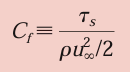
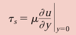
뉴턴유체인 경우 전단응력은 위와같이 정의된다. 여기서 μ는 점성계수라고 알려진 유체의 물성값이다. 여기서 속도는 x의 함수이므로 둘다 x에 의존하게 된다.
6.1.2)온도경계층
표면 위에 유체흐름이 있을 때 속도 경계층이 발달되는 것과 마찬가지로 자유흐름의 유체온도와 표면온도가 다르다면 온도경계층이 발달된다. 등온인 평판 위에서의 흐름을 생각해보자. 선단에서는 온도분포가 T(y)=T∞ 로서 균일하다. 그러나 평판과 접촉하는 유체입자들은 평판의 표면온도 상태로 열적인 평형을 이룬다.
차례로 이 입자들은 인접한 유체층 내의 입자들과 에너지를 교환하며, 유체층 내에서 온도구배가 발달된다. 이와 같은 온도구배가 존재하는 유체영역을 온도경계층이라고 하며 그 두께 δ는 일반적으로 [(Ts -T)/(Ts -T ∞ )]=0.99가 되는 y값으로 정한다. 이 경계층내에서 조건들과 대류 열전달계수 사이의 관계는 쉽게 설명될 수 있다. 선단으로부터 임의의 거리 x에서의 국소 표면 열유속은 y=0에서 유체에 푸리에 법칙을 적용함으로써 다음과 같이 구할 수 있다. 즉
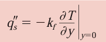
근데 이렇게 전도로 나가는 열은 대류로 가는 열과 같다.
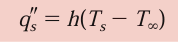
이 둘을 같다고 놓으면 다음 식이 만들어진다.
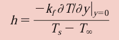
6.1.3)농도경계층
어떤 표면 위를 흐르는 A와 B의 이성분 혼합물에 대해 생각해보자.
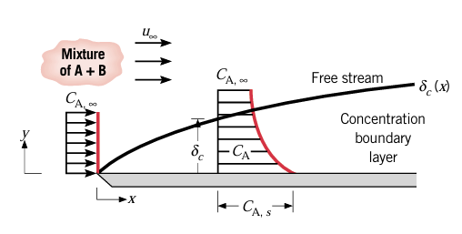
표면에서 몰농도 CAS이고 자유흐름에서 몰농도 CA00이다. 이들이 서로 다르면 대류에 의해 A가 전달된다. 그 경계층 두께는 [(CA,s -CA)/(CA,s -CA00, )]=0.99인 y값으로 정의된다. 화학종 A의 몰 유속 N''A는 다음과 같이 정의된다.
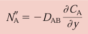
또는 다음과 같이 정의할 수 있다.\
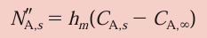
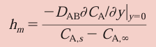
여기서 hm은 대류 물질전달 계수이다.
여기서 핵심적인 매개변수들은 마찰계수 Cf, 대류열전달계수 h, 대류물질전달계수 hm이다. 이제 이들 매개변수로 관심을 돌려보자.
6.2 국소 및 평균 대류계수
6.2.1 Heat Transfer
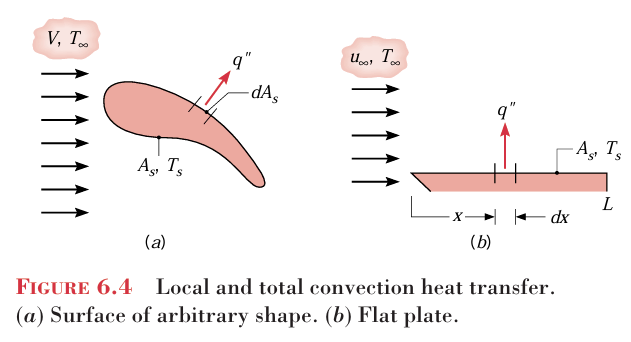
속도가 V이고 온도가 T00인 임의의 유체가 면적 As인 임의의 형상의 표면 위를 흐른다. 표면이 균일한 온도 Ts로 주어지면 대류 열전달이 발생한다. 이때 표면에 따라 q와 대류 열전달계수 h가 바뀔 것이다. 총열전달률 q는 표면 전체에 대하여 국소 열유속을 적분하여 얻을 수 있다.
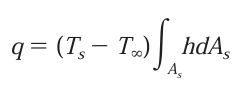 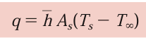
우리는 아래의 식이 더 익숙하다. 따라서 평균 열전달계수를 다음과 같이 정의한다.
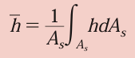 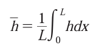
평판의 경우 아래 식이 쓰인다.
6.2.2 Mass Transfer
유사한 결과가 물질전달에서도 발생한다.
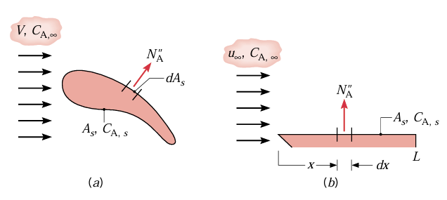
온도대신 몰농도를 써서, 몰농도 차이가 발생하고 이로 인해 q대신 N''A(kmol/s)가 발생한다. 이때
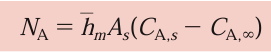 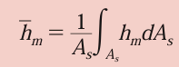 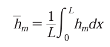
또한 질량플럭스, 질량전달률이라고 불리는 n''a,na도 존재한다. 이는 NA에 그냥 물질 A의 분자량을 곱함으로써 해결된다.
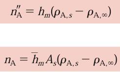
이때 hm은 다음과 같다.
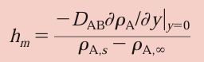
그리고 nA를 ㄷ계산하는데, 또는 NA를 계산하는 데 몰농도가 필요했다. 이는 다음 식을 통해서 구할 수 있다.
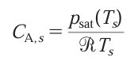 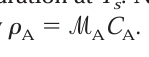
6.2.3)대류문제
h또는 hm을 결정하는 것이 대류문제로 간주된다. 그러나 이 문제는 밀도, 점도, 열전도율, 비열과 같은 유체의 물성값에 따라 다르며 특히 대류 계수는 기하학적 형상과 유동계수에 의존하기 때문에 단순한 문제가 아니다. 이러한 독립변수들의 다양성은 표면에서 발달되는 경계층들에 대한 대류의 열전달 의존성에 기인한다고 할 수 있다.
6.3 층류 및 난류유동
지금까지 대류에 의한 토의에서 유동조건의 중요성은 언급하지 않았다. 대류문제를 다루는 데 필수적인 첫번째 사항은 그 경계층이 층류인지 난류인지를 구분하는 것이다. 표면 마찰과 대류전달률은 경계층이 어떤 흐름인지에 따라 크게 달라진다.
6.3.1 Laminar and Turbulent Velocity Boundary Layers
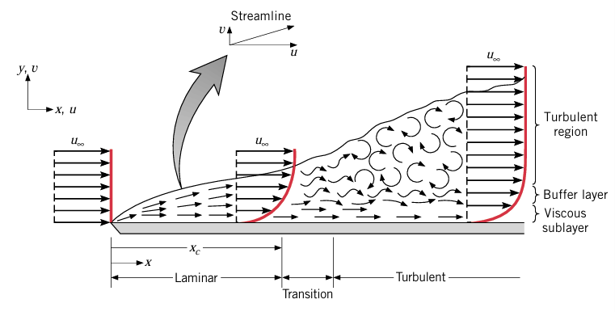
평판 위의 경계층 발달에 대해 살펴보자. 층류와 난류는 보통 같이 일어나며 초반에는 층류, 나중에는 난류가 된다. 층류에서는 유체 흐름이 잘 정돈되어있으며 이건 천이영역까지 나타난다. 그러나 천이 영역 이후에서는 난류가 발생하며 이때는 혼합이 발생하여 속도가 상대적으로 평평하고 저층에서 매우 큰 속도구배가 나타난다.
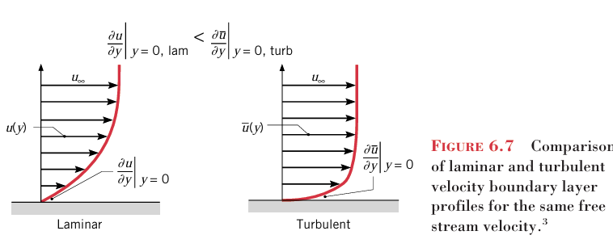
이러한 난류 지점을 정하는데 레이놀즈 수가 사용된다.
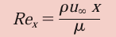
평판에서 천이가 시작되는 위치 xc에 대하여 레이놀즈 수는 5*10^5으로 알려져있다.
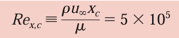
이건 속도경계층을 본거고, 이번엔 층류 및 난류의 온도 및 농도 경계층을 보도록 하자.
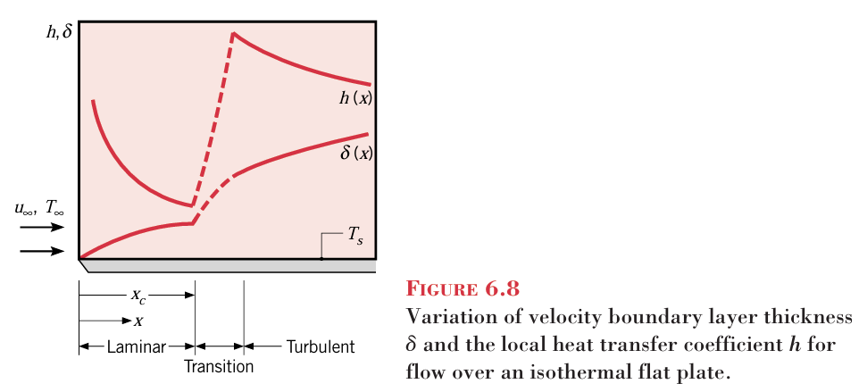
열 및 물질전달 계수는 층류와 난류에 따라 다르게 도출된다.
6.4 경계층 방정식
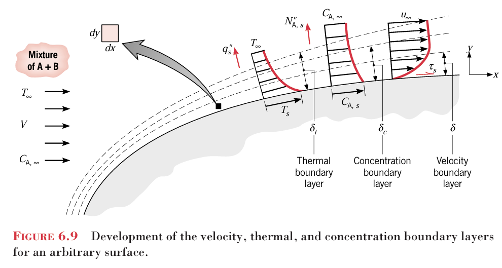
그림 6.9에서 보는 바와 같이 경계층 조건을 지배하는 방정식을 고찰함으로서 경계층의 거동을 결정하는 물리적 영향의 이해를 증진시키고, 더 나아가 대류전달과의 관계를 설명할 수 있다.
6.1절에서 토의한 바와 같이, 속도 경계층은 자유 흐름속도와 벽면의 영속도의 차이에 의해 생기고 온도 경계층은 표면과 자유흐름의 온도차에 의해, 생긴다. 농도 경계층은 자유흐름과 표면의 농도차이에서 생긴다.
다음 절의 목적은 열 및 화학종 전달을 수반하는 경계층 흐름에 적용할 수 있는 속도, 온도, 화학종 농도장을 지배하는 미분 방정식을 살펴보는 것이다. 6.4.1절은 층류 경계층 방정식을 제시하고 부록 F는 난류조건에 대한 관련 방정식을 제공한다. 6.5절에서는 이들방정식이 중요한 무차원 매개변수를 결정하는 데 사용될 것이다.
6.4.1:층류유동에 관한 경계층 방정식
속도, 온도, 농도구배가 공존하는 유체유동은 뉴턴의 2법칙과 질량, 에너지 및 화학종 보존 법칙을 만족해야 한다. 물성값이 일정한 2차원 정상상태 비압축성 유체유동에 대한 직교좌표 결과 방정식이 부록 E에 주어져있다.
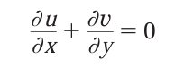
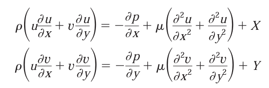 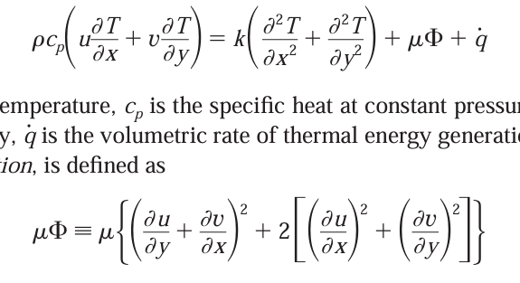 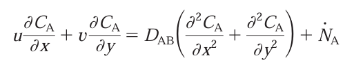
중력을 무시하고 열에너지 생성이 없고 유동은 비반응이라고 제한한다. (X,Y,q,NA=0) 또한 x방향 확산을 무시할 수 있다.
그러면 전체적인 연속방정식은 다음과 같다.
x-운동량방정식은 다음과 같다.
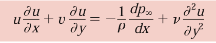
에너지 방정식은 다음과 같다.
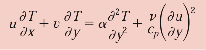
좌변의 항은 유동대류로 떠나가는 온도이며 우변은 y방향 전도로 인한 열에너지의 유입률+점성소산(무시가능)이다.
화학종보존 방정식은 다음과 같다.
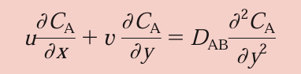
이렇게 4개의 식을 적당한 경계조건으로 풀면 u,v,T,CA의 공간적인 변화가 나오게 된다. 이때 T,CA를 구하기 위해 3 4식을 풀려면 1 2를 풀어서 u v를 구해야 한다. 일단 T와 CA만 알면 다음 식을 통해 열전달계수와 물질전달계수를 구할 수 있다.
이 4식들은 운동량 전달, 열전달 및 물질전달 사이의 중요한 유사성과 더불어 핵심적인 경계층 상사 매개변수를 검증하는 데 사용될 수 있다. 층류 지배방정식은 이 목적을 위하여 6.5~6.7절에서 사용하게 될 것이다.
6.5:경계층 상사-정규화된 경계층 방정식
식
을 살펴보면 강한 유사성이 있음을 알 수 있다. 에너지 마지막의 점성소산항과 운동량의 압력구배항을 무시해보면, 이들은 모양이 비슷해보임을 알 수 있다. 좌변에는 유동대류항이 있고 우변에 확산항이 존재한다. 이 식들은 많은 공학적 문제에 적용할 수 있는 저속 강제대류 유동을 기술하고 있다. 이들 사이에 상사성을 끌어내려면 지배방정식을 무차원화해야한다.
6.5.1:경계층 상사 매개변수
먼저 경계층 방정식에 다음 무차원 독립변수를 정의해서 정규화시켜보자.
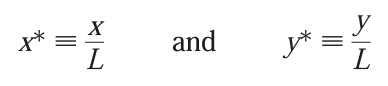 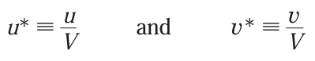 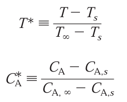
이들을 위에 제시된 식에 대체 투입하여 다음 표에 제시된 식을 얻을 수 있다.
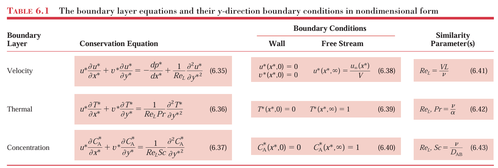
경계조건들도 제시가 되어있다. 이때 대체투입하는 과정에서 3가지 무차원 식이 발생하였는데, 그것은 레이놀즈수 Re, 프랑틀 수 Pr, 슈미츠수 Sc이다. 이와 같은 상사 매개변수는 매우 중요하다. 왜냐면 한 세트의 대류조건 하에서 얻어진 임의 형상의 표면에 대하여 얻어진 결과를 완전히 다른 조건하에서도 기하학적으로 상사적인 표면에 적용할 수 있기 때문이다. 예를 들면 이 조건들은 유체의 종류, 자유유동 값 V에 의해서 정해지는 유체속도 또는 특성길이 L에 의해서 정해지는 표면의 크기에 따라 변할 수 있다. 상사 매개변수와 무차원 경계조건들이 같다면, 무차원 속도, 온도, 화학종 농도에 관한 표 6.1의 미분방정식의 해 또한 같아지게 된다.
6.5.2:해의 함수 형태
운동량 방정식 6.35는 속도 경계층에서 조건이 유체 물성값인 ρ μ 속도 V 및 길이 L에 의존함에도 불구하고 이들을 레이놀즈 수로 한번에 표현함으로서 단순화될 수 있음을 의미한다. 따라서 식 6.35를 풀면 다음과 같은 모양이 나올 것이다.
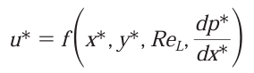 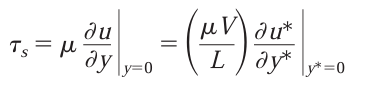 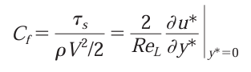 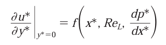 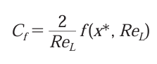
즉 마찰계수 Cf는 오로지 무차원 공간좌표와 레이놀즈 수의 함수이다. 이와 유사한 것이 열 및 물질전달의 대류계수에도 적용된다.
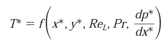 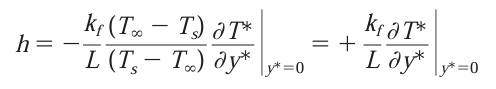
이 식은 Nussel 수라고 하는 매개변수를 암시한다.
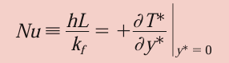 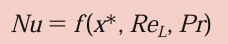 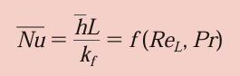
즉 평균 넛셀수는 레이놀즈 수와 pr의 함수의다.
이제까지는 열전달계수 h에 대해서 얘기했고 마찬가지로 대류 물질전달 계수 hm도 상태값과 속도 및 특성길이에 의존한다. 그러나 이를 단순화 시키면 셔우드 수 Sh가 나온다.
농도 경계층에 대한 셔우드 수의 관계는 온도 경계층에 대한 Nu 수의 관계와 같으며 위 식은 셔우드 수가 x*,Re,Sc의 함수여야 함을 나타낸다. 이때 평균 셔우드 수를 보통 정의하여 맨 아래와 같이 정의한다.
너셀수와 셔우드 수로 표현되는 중요성을 완전히 인정해야 한다. 원래 일곱개의 매개변수가 필요한 것을 3개의 무차원 그룹들로 표현할 수 있게 바꾸었다. 이러한 단순화가 주는 편리성과 힘은 앞으로의 장에서 볼 수 있다. 또한 하나의 함수 관계가 특정한 표면의 기하학적 형상에 대하여 구해진다면, 그것은 보편적으로 적용될 수 있다고 알려져있다. 즉 원래의 경계층 방정식에서 암시적인 가정들이 아직 유효하게 남아있다면, 유체의 종류, 속도, 길이 척도 등이 달라도 적용할 수 있는 것이다.
6.7) 경계층의 상사성
경계층의 거동에 관해서 엔지니어로서 우리의 주된 관심사는 무차원 매개변수들인 Cf, Nu, Sh이다. 이 세 가지의 매개변수의 값을 알게 되면, 벽 전단응력, 대류 열 및 물질전달률을 계산할 수 있다. 따라서 대류해석에 있어서 Cf,Nu,Sh를 서로 관련시킬 수 있는 상관식이 도출될 수 있다면 매우 유용하리라 생각된다. 그와 같은 상관식이 경계층 상사의 형식으로 이용될 수 있다.
6.7.1)열전달과 물질전달의 상사성
만일 두 개 이상의 과정이 동일한 형태의 무차원 식에 의해서 지배된다면, 그 과정은 상사적이라고 말한다.
표 6.1의 식 6.36과 6.37, 그리고 경계조건 식 6.39와 6.40에서 보는 바와 같이 대류 열전달 및 물질전달은 상사적이다. =구조가 같다는 뜻. 각각의 미분 방정식은 동일한 형태의 유동대류와 확산항들로 구성되어 있다.이때 Pr과 Sc의 역할은 서로 상사적이라고 볼 수 있다. 이러한 상사성의 중요한 의미는 온도 경계층을 지배하는 무차원 상관식이 농도경계층을 지배하는 무차원 상관식과 동일한 형이어야 한다는 점이다. 따라서 적용된 경계조건이 상사적이면 경계층 내에서 온도와 농도의 분포식 또한 동일한 함수 형태이어야 한다.